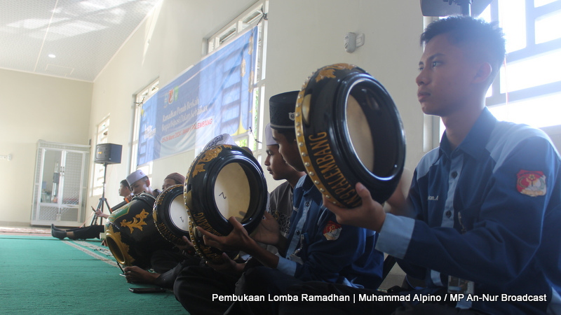

TENTANG KAMI
Kerohanian Islam An-Nur / ROHIS An-Nur adalah salah satu ekstrakurikuler yang ada di lingkungan SMA Negeri 9 Palembang.
Ekstrakurikuler ini didirikan pada tahun 1994 oleh 2 orang siswi yang dibantu oleh mahasiswa dari lembaga dakwah kampus.
VISI
- Membentuk sikap dan karakter kepribadian seluruh anggota yang JIKAB (Jujur, Ikhtiar, kompak, amanah, berakhlak, dan bertanggung jawab)
- Meningkatkan keimanan dan ketakwaan kepada Allah SWT serta kecintaan terhadap Allah, Rasul-rasulnya dan malaikat- malaikat nya
MISI
- Meningkatkan kualitas anggota Rohis dalam beribadah dan bermuamalah
- Mengutamakan kejujuran dan selalu amanah dalam menjalankan tugas
- Membentuk kekompakkan dan rasa saling memiliki antar sesama anggota Rohis
- Memajukan Rohis dengan cara bersikap inovatif, kreatif, dan inspiratif dalam menyelenggarakan kegitan
- Selalu berikhtiar semaksimal mungkin dalam mencapai visi yang telah diterapkan
SLOGAN
حَيٌ فِيْ قُلُوْبِنَا
Hayyun Fii Qulubinaa
Selalu Hidup di Hati Kami
PENGHARGAAN
Pencapaian yang ditorehkan oleh kader kami

SIMBELS EXTION V
Juara 1 | Kategori MTQ | 2023
Simbels Extracurricular Competition yang disingkat Simbels Extion adalah sebuah acara perlombaan antar ekstrakurikuler yang diadakan oleh SMA Negeri 19 Palembang dan diikuti oleh seluruh SMA/sederajat yang berada di Kota Palembang dan sekitarnya
UNITY PART IV
Juara 1 | Kategori Hadroh | 2024
Unbeatable In Diversity atau disingkat UNITY, adalah acara perlombaan yang diselenggaraan oleh SMA Negeri 8 Palembang yang memperlombakan berbagai macam kategori dari berbagai ekstrakurikuler.
LOMBA MTQ & HADROH TINGKAT SMA/SMK NEGERI DAN SWASTA SE-SUMATERA SELATAN
Juara 3 | Kategori Hadroh | 2024
Perlombaan skala provinsi yang diikuti oleh seluruh SMA/SMK di seluruh penjuru Sumatera Selatan. Perlombaan ini diselenggarakan oleh SMA Negeri 5 Palembang dan didukung oleh PEMPROV SUMSEL.